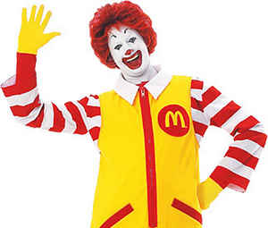

MCDONALD'S
History of Mcdonald's:
McDonald's Corporation is an American fast food company, founded in 1940 as a restaurant operated by Richard and Maurice McDonald,
in San Bernardino, California, United States. They rechristened their business as a hamburger stand, and later turned the company
into a franchise, with the Golden Arches logo being introduced in 1953 at a location in Phoenix, Arizona. In 1955, Ray Kroc, a
businessman, joined the company as a franchise agent and proceeded to purchase the chain from the McDonald brothers. McDonald's
had its previous headquarters in Oak Brook, Illinois, but moved its global headquarters to Chicago in June 2018.
Description:
McDonald's is the world's largest restaurant chain by revenue, serving over 69 million customers daily in over 100 countries
across 37,855 outlets as of 2018. Although McDonald's is best known for its hamburgers, cheeseburgers and french fries, they feature chicken products, breakfast items, soft drinks, milkshakes, wraps, and desserts. In response to changing consumer tastes and a negative backlash because of the unhealthiness of their food, the company has added to its menu salads, fish, smoothies, and fruit. The McDonald's Corporation revenues come from the rent, royalties, and fees paid by the franchisees, as well as sales in company-operated restaurants. According to two reports published in 2018, McDonald's is the world's second-largest private employer with 1.7 million employees (behind Walmart with 2.3 million employees). As of 2020, McDonald's has the ninth-highest global brand valuation.
Mascot:
Ronald McDonald is a clown character used as the primary mascot of the McDonald's fast-food restaurant chain. In television commercials, the clown inhabited a fantasy world called McDonaldland, in which he had adventures with his friends Mayor McCheese, the Hamburglar, Grimace, Birdie the Early Bird and The Fry Kids. By 2003, the McDonaldland world had been dropped from McDonald's advertising, but Ronald himself continued to appear.